D1/D2 — fiskarna stannar, dimman lyfter D1: samma fiskare står kvar, fångsten är noll under stormen. D2: vanlig streckad dimma, inga nya svarta ytor; en redan känd grå hex lämnas utanför. Före och nollfas har byte-identisk kartduk (omgivningens animationsfas låst; omenets tid går normalt). Klockade bilder vid cirka 0,3/1/2/4 sekunder och slutminne. 18 nya hexar i detta prov.
Egen färsk server/DB/Redis, faktiskt bönesvar via WebSocket. Alla 16 bilder granskade i originalstorlek. Timothy bedömer BILD; ingen godkännandedom påstås. Rapport och testavgränsning · Runtime, tider, källhashar och pixelprov
Alla 1280 390 D1-1280 — Fishers stay placed and catch nothing while the storm covers their fishing ground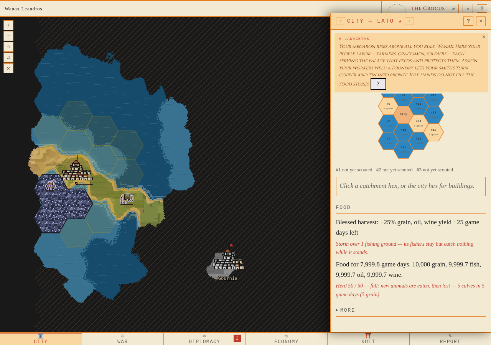
D2-before-1280 — Before the actual prayer: ordinary striped fog, with one remembered tile already known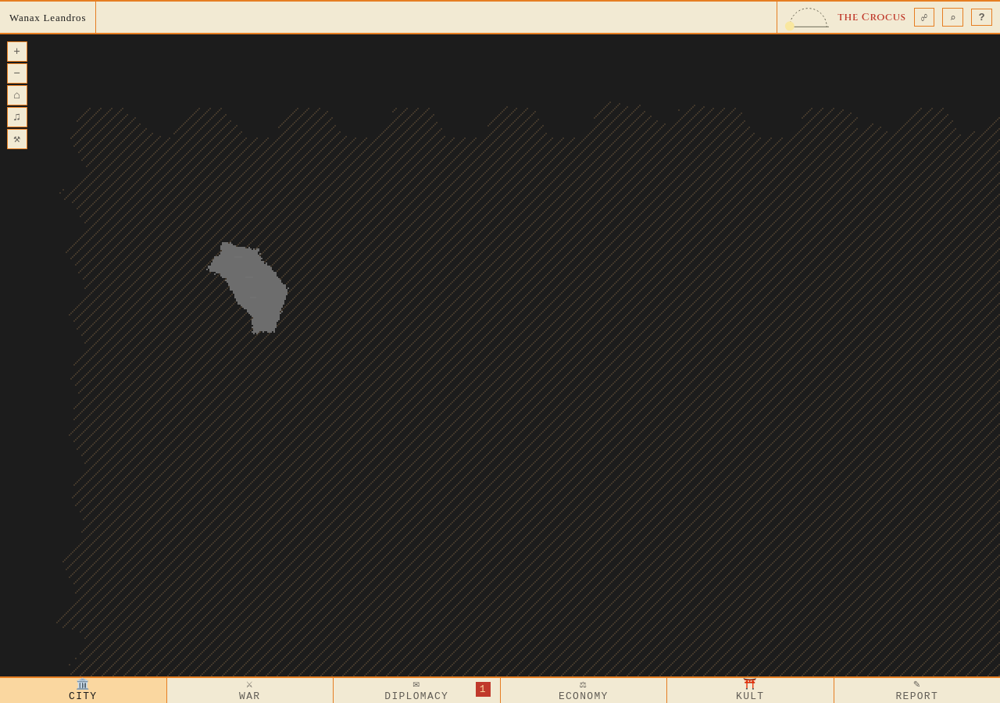
D2-zero-1280 — Actual WS, before the first 300ms step: canvas is byte-identical to before the prayer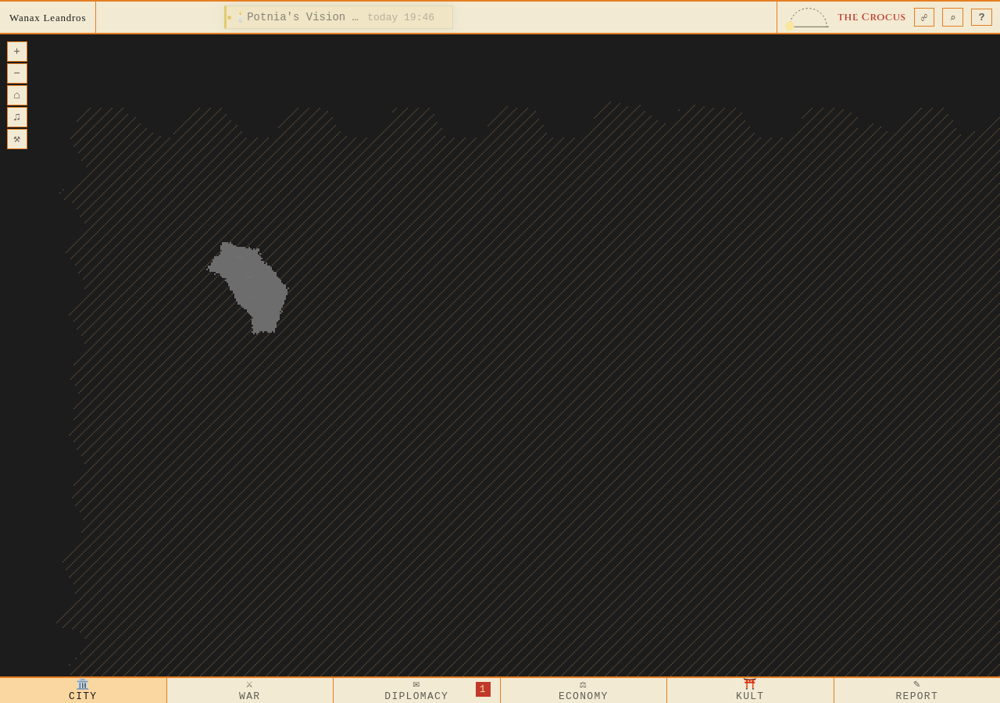
D2-300-1280 — Actual animation at target 0.3s; pre-screenshot 0.328s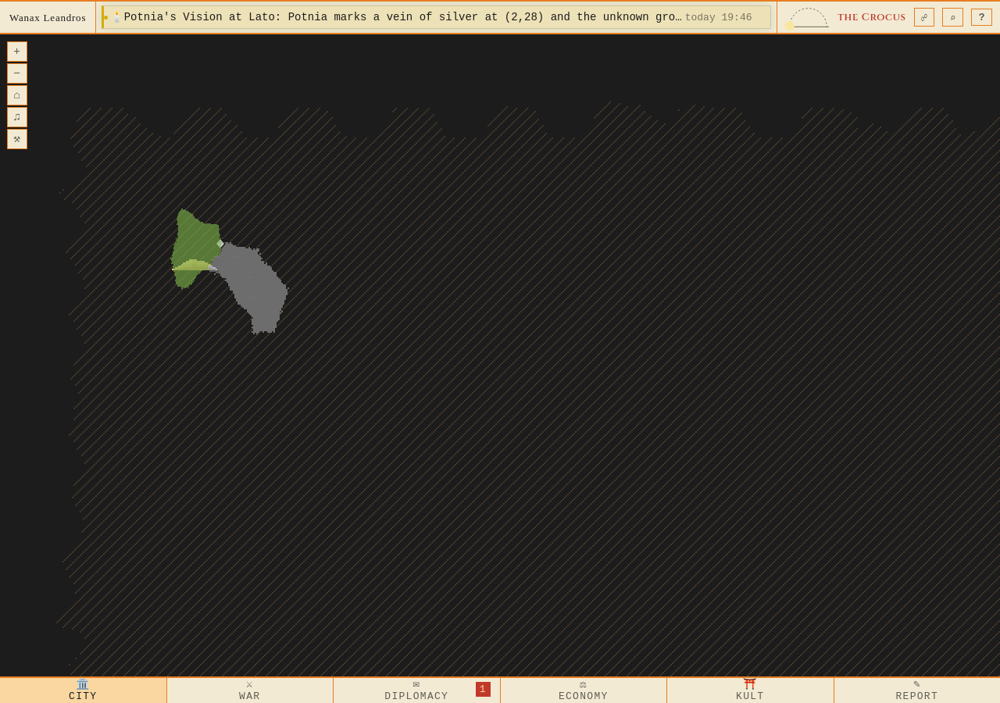
D2-1000-1280 — Actual animation at target 1s; pre-screenshot 1.014s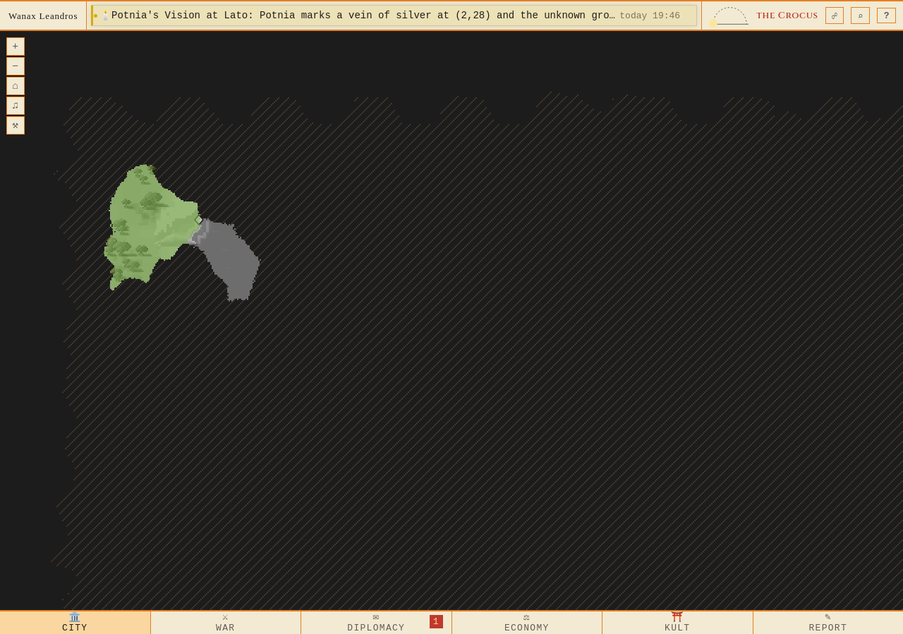
D2-2000-1280 — Actual animation at target 2s; pre-screenshot 2.013s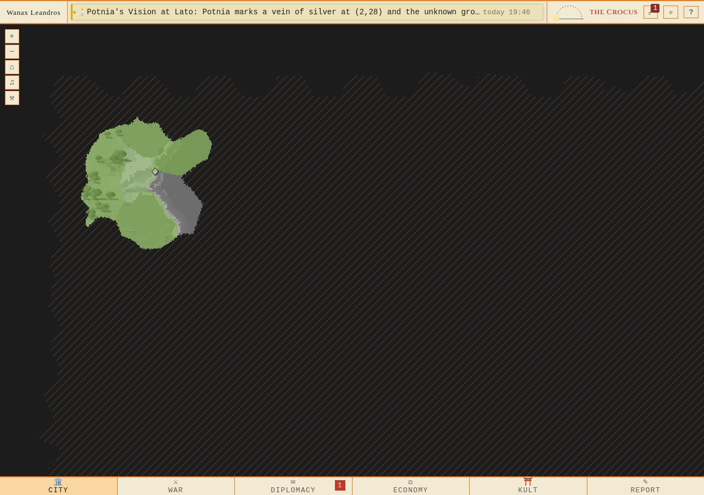
D2-4000-1280 — Actual animation at target 4s; pre-screenshot 4.013s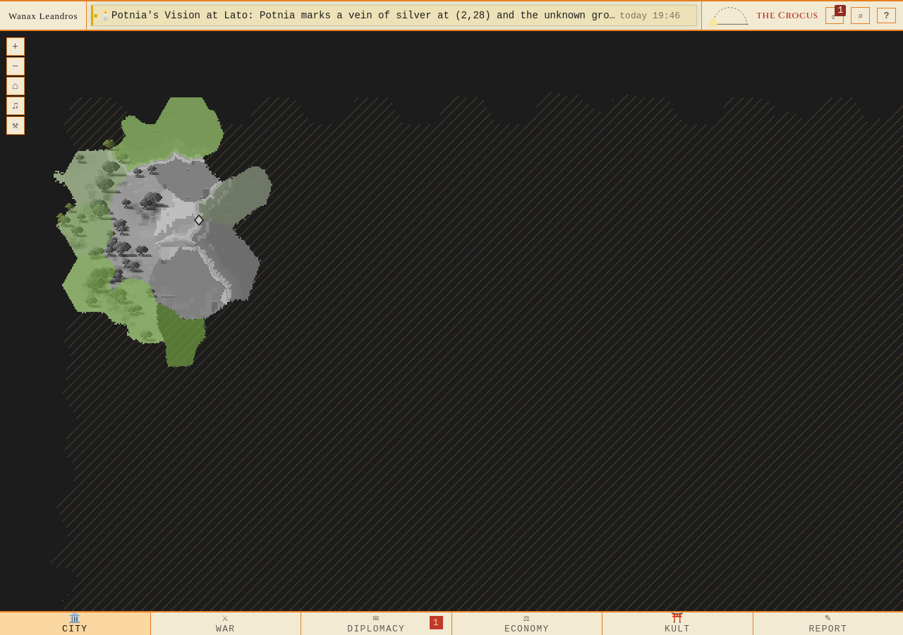
D2-memory-1280 — Finished: ordinary remembered terrain, no replacement fog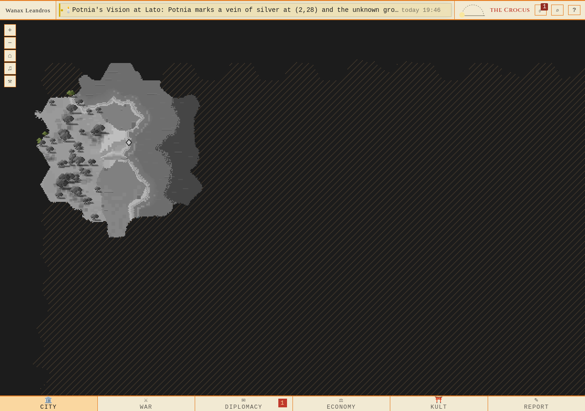
D1-390 — Fishers stay placed and catch nothing while the storm covers their fishing ground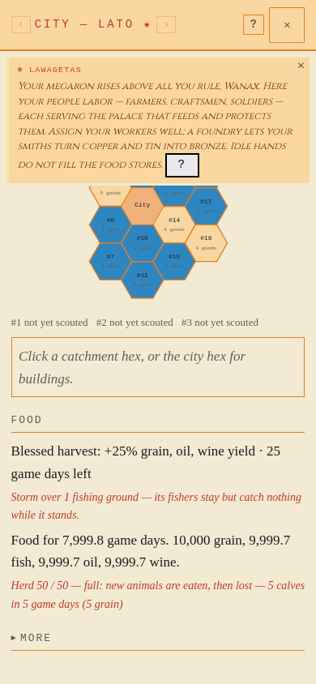
D2-before-390 — Before the actual prayer: ordinary striped fog, with one remembered tile already known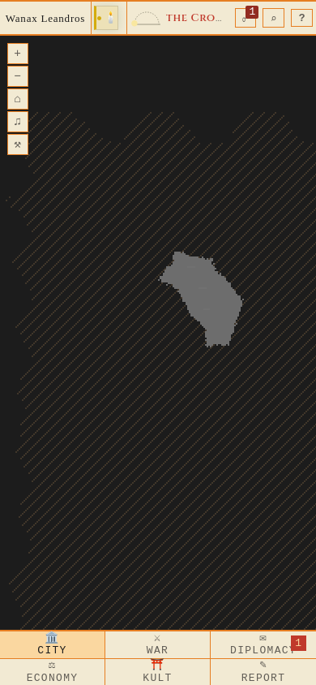
D2-zero-390 — Actual WS, before the first 300ms step: canvas is byte-identical to before the prayerD2-300-390 — Actual animation at target 0.3s; pre-screenshot 0.335s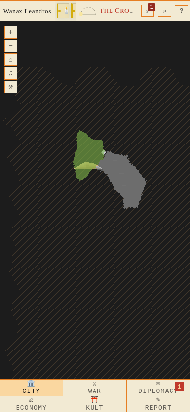
D2-1000-390 — Actual animation at target 1s; pre-screenshot 1.021s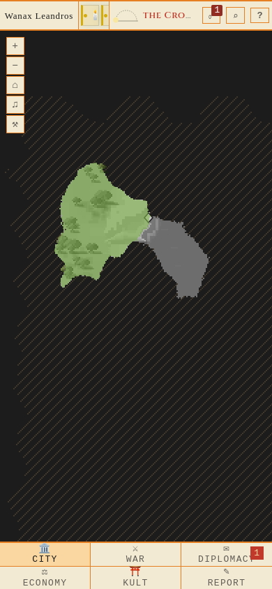
D2-2000-390 — Actual animation at target 2s; pre-screenshot 2.023s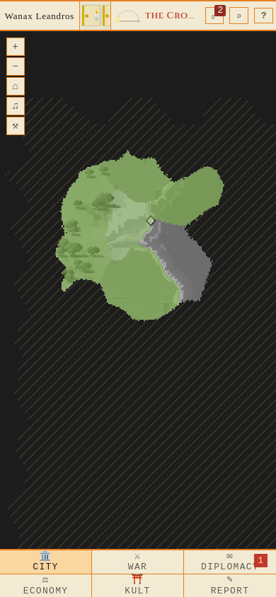
D2-4000-390 — Actual animation at target 4s; pre-screenshot 4.002s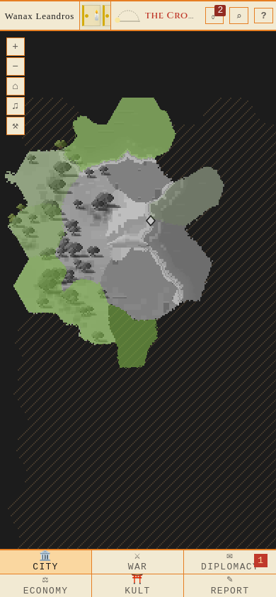
D2-memory-390 — Finished: ordinary remembered terrain, no replacement fog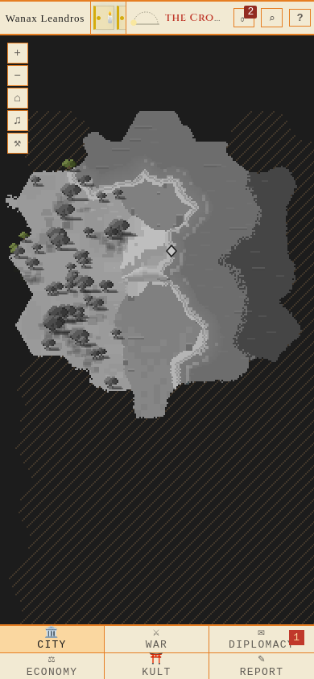